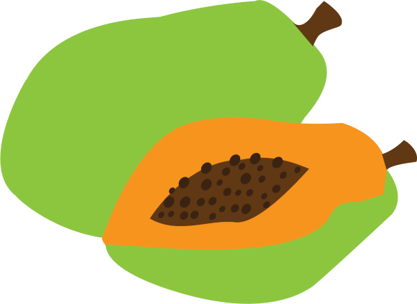

Mùi đu đủ xanh (L'odeur de la papaye verte)
de Tran Anh Hung
Diffussion: 01:43
Durée : 104 minutes
Une servante vietnamienne, Mui, observe la vie de deux familles différentes de Saigon :
la première, une vendeuse de textiles avec trois garçons et un mari souvent absent;
la seconde, un jeune pianiste séduisant avec sa fiancée.